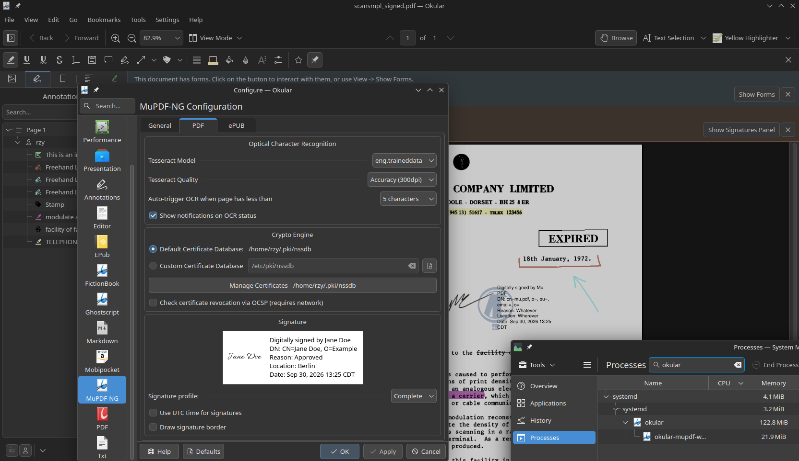
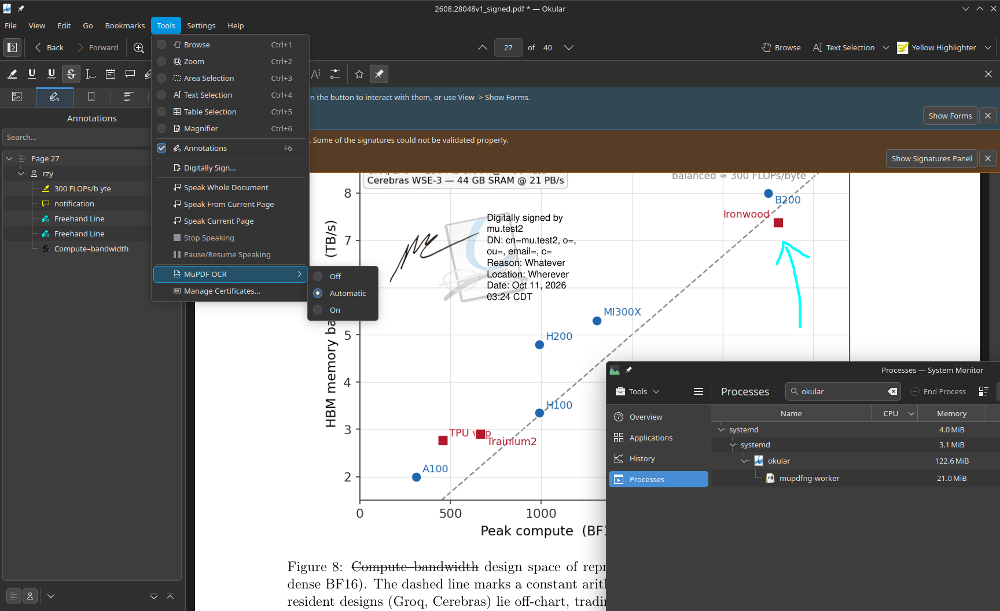
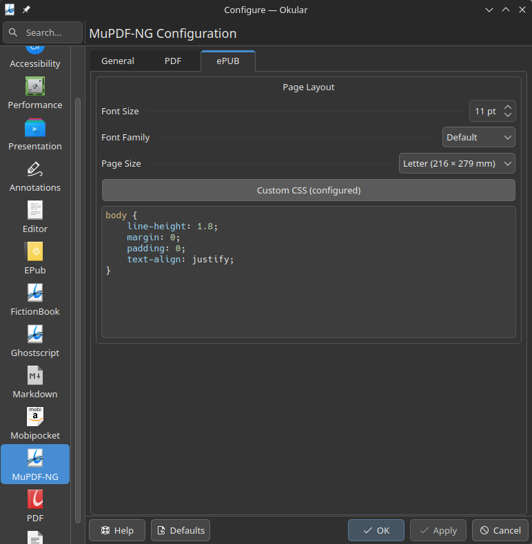
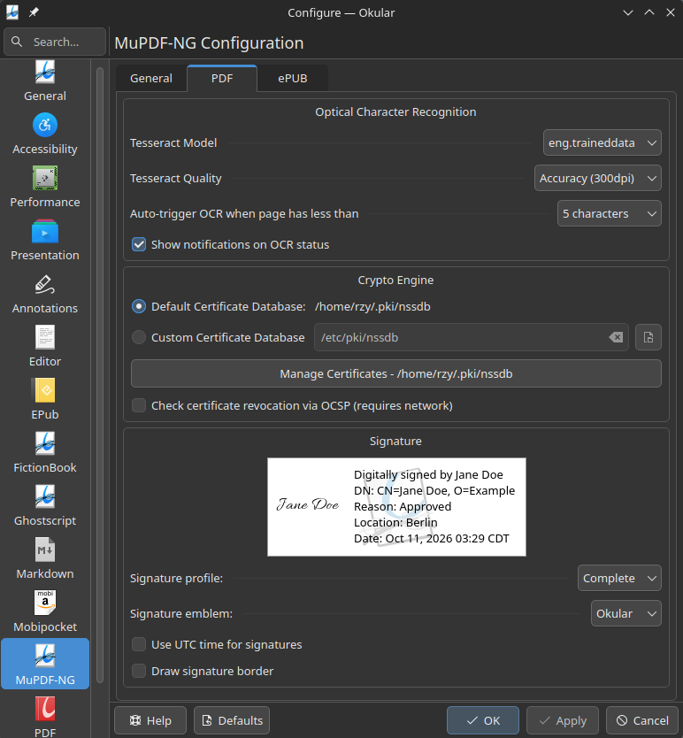
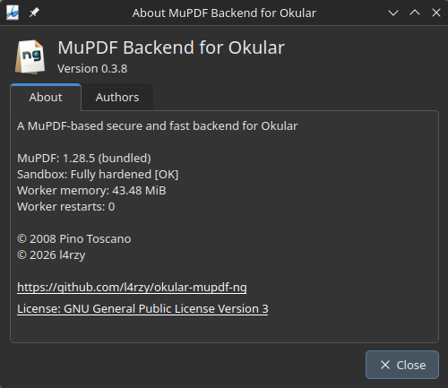

Sandboxed by design
PDF is a complex format. It should not be parsed and rendered in Okular’s memory space, unconfined. The document engine runs in an isolated worker process.
A MuPDF-based secure and fast backend for Okular. Supports PDF, ePUB, and MOBI formats.
Document rendering is moved to an isolated and hardened worker process. This reduces the impact of MuPDF vulnerabilities while keeping Okular’s desktop integration seamless.



Click any screenshot to view it fullscreen — close button top-right, or press Esc / click outside.




PDF is a complex format. It should not be parsed and rendered in Okular’s memory space, unconfined. The document engine runs in an isolated worker process.
The Poppler backend is feature-rich but sluggish on large documents — a known weakness of Poppler. MuPDF renders quickly even where Poppler stalls.
The default ePUB and MOBI backends render poorly and slowly, even on a high-end CPU. This backend supports custom CSS and page sizes for ePUB, plus ePUB/MOBI-to-PDF export.
The document engine runs in an isolated worker process, where potentially unsafe documents are parsed and rendered. See ARCHITECTURE.md for component responsibilities, IPC, shared rendering buffers, sandboxing, caches, and the source-tree layout.
| Feature Category | Capabilities | okular-mupdf-ng | Okular official backends |
|---|---|---|---|
| Safety & Isolation | Sandboxed out-of-process worker (Landlock, Seccomp, namespaces, resource limits) | Yes | No (in-process execution) |
| Caching | ePUB & OCR & PDF cachings | Yes | No |
| Formats | PDF, ePUB, MOBI | Yes | Yes |
| ePUB customisation | Custom CSS, Pagesizes | Yes | No |
| ePUB/MOBI export | Export ePUB/MOBI to PDF | Yes (via MuPDF rendering) | Yes (basic, via document print) |
| PDF Forms | AcroForm text inputs, checkboxes, radio buttons, choices, and push buttons | Yes (AcroForm; XFA detected only) | Yes (AcroForm; XFA detected only) |
| PDF JavaScript | Calculations and button/field-event actions | Yes (MuPDF/MuJS executes in the sandboxed worker; experimental, opt-in) | Yes (Poppler passes scripts to Okular, which executes them in QJSEngine) |
| Signatures | Verification and creation (NSS crypto) | Yes | Yes (plus GPG) |
| Cert Manager | NSS certificate manager; generate RSA and ECDSA P-256 signing certificates | Yes | No |
| Annotations | Text, highlight, line, shape, ink, stamp, caret | Yes | Yes (plus sound, movie & file-attachment annotations) |
| Annotations export | Export PDF annotations to XFDF | Yes | No |
| Flattened PDF export | Bake annotations and form fields into PDF page content | Yes | No |
| Document Tools | Text search, outline/TOC, links, fonts, metadata, embedded files | Yes | Yes |
| PDF Heuristic Outline | Generation for PDFs that don't have embedded outline | Yes | No |
| Printing & Exporting | Print & Export | Yes | Yes |
| PDF layers | Toggle optional content in the Layers sidebar | Yes | Yes (PDF) |
| OCR | Built-in Tesseract page OCR engine | Yes | No |
See INSTALL.md for prebuilt packages, build requirements, and instructions for building from source.